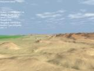
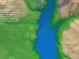

{kind=link}
{kind=link}
{kind=link}
{kind=link}
{kind=link}
{kind=link}
{kind=link}
{kind=link}
{kind=link}
{kind=link}
{kind=link}
{kind=link}
{kind=link}
{kind=link}
{kind=link}
{kind=link}

| 03/15/2005: | This demo is getting pretty old, and I still get a lot of positive feedback from people looking at it! This feels great! Thank you guys! :) Also, I uploaded a fixed binary package, as the program used UPX compressed executables which seems to crash on Windows XP SP2. Now I also had a chance to see my program on an ATI card and the fonts are broken too. This (together with tons of other problems) won't be addressed in the near future. Maybe in Ranger Mk. III. ;) |
| 12/01/2003: | Found a job, meaning that I won't have time to work on this terrain technology for a while... |
| 11/11/2003: | Released full soure code for the project! Added support for embedded quadtree data layout and indexing (does not yet work with detail geometry, though). This version also features some minor fixes and changes. |
| 10/01/2003: | First public release of the engine, binary version only. |
This technology demo renders vast landscapes with an incredible amount of detail in real-time. The accurate per pixel shading of the terrain ensures that you can see every little feature of the surface, even at extreme distances!
And this demo is just the tip of the iceberg! It shows the basic ideas implemented on GeForce3 class hardware. For details on a number of possible improvements over this demo, see the technology section!
It is really best to see the demo in motion, but in case you can't check it out, here are some stills from the engine (click on the thumbnails to see a larger image):
|  | ||||
|
 |
Since there are no trees, buildings or other identifiable objects in the scene, it is very hard to actually tell the scale of the terrain. But note the tiny details visible on the images! You can see mountains a hundred kilometer away, yet you can still see the small clods at your feet! To have a better feel for the scale of the terrain look at the videos below!
For those of you who can't run this demo, I've also provided a couple of short video clips. These clips were created using the DivX MPEG-4 encoder (version 5.03). You can download the necessary codec from here. I have also included one low resolution MPEG-1 video (320x240, 52 secs, 12.2 MB) for those who can't run DivX on their machines. The first video is worth looking at even if you can run the demo on your computer, because it features an interesting camera animation not included in the demo.
|
52 secs, 10 MB |
12 secs, 3.5 MB |
20 secs, 4.9 MB |
|
8 secs, 1.8 MB |
6 secs, 2.2 MB |
Note that due to the small resolution and lossy compression these video clips look far worse than the real demo. Also note that these clips were recorded at a constant 30 frames per second, but this has nothing to do with the actual rendering performance. The real thing runs smoother and looks nicer! :)
You can download the demo here (3.3MB). Just unzip the contents of this package to a directory and run "ranger.bat" to start the demo! For detailed instructions see the accompanying readme file.
Important! As of now, this demo will run at full quality only on
GeForce3 or better nVidia GPUs.
ATi Technologies and other vendors are
not supported at the moment. This means that on those cards the renderer
will default to wireframe mode. The reason for this is that I have to use
some advanced functions that are only available through vendor specific
extensions. Since my computer is equipped with a GeForce4, I have developed
the rendering path for nVidia GPUs. There are also standard (ie. not vendor
specific) methods for doing the required calculations (using the
fragment program or the GLSL) but that functionality is only supported
by the newest crop of graphics accelerators (GeForce FX, Radeon9500
and above).
Even in compatibility mode, the demo assumes decent OpenGL support. Since
this is a research project, there are no fallback mechanisms. If the
required functionality (like the VBO) is not supported by the driver,
the demo will quit immediately.
Although the demo might run with some older drivers, for optimal performance it is strongly recommended to run this program with the latest video dirvers installed! The reason is that the engine utilizes some recent technologies, which might not be fully optimized in older drivers (if supported at all). I have tested this demo with the WHQL approved Detonator 45.23 drivers. My development/test machine is an AthlonXP 1800+ with 512MB RAM running Windows XP. Hardware graphics acceleration is provided by a GeForce4 Ti4200. Performance depends on a lot of things. With the default settings, running the demo at 1152x864 gives between 40 and 70+ FPS, depending on scene complexity. One notable fact is that with these settings the demo is always fillrate limited, meaning that the videocard is the bottleneck, not the CPU!
Please don't forget that this is experimental software and although I've done my best to make this demo as robust as possible, I can't guarantee that it will work as expected. I had very limited possibility for testing (mainly my own computer). Of course, if you find that something does not work, you should let me know and I'll see if I can do something about it!
Known Issues:
After installation, double-click on "ranger.bat" to start the demo.
By default, the demo will start in desktop resolution. If you want
to run the program in some other resolution, you can edit the
"scripts/main.lua" file, or change the desktop/window size at
runtime from the console. Upon first startup the program will
need to precompute and cache some data, this may take some time.
After initialization, the program loads a flythrough camera animation.
You can adjust playback speed with the PageUp/PageDown keys and
stop/restart the animation at any time by pressing space. When the
animation is stopped, you can look and move around the terrain freely,
by using the mouse. The control is similar to most first-person games.
There are also a couple of keyboard bindings. For more information on
these refer to the readme file. This
text file is also included in the package for offline reading. You can
exit the demo at any time by pressing Esc, or typing "Quit();" in the
console.
Have fun!!
The terrain engine is based on an enhanced version of the
SOAR
(Stateless One-pass Adaptive Refinement) algorithm (see my
thesis for details).
SOAR is an advanced view-dependent CLOD (Continuous Level of Detail)
mesh generation technique. This means that the surface is approximated
at runtime with as few triangles as possible, avoiding unnecessary data
processing. SOAR generates a new mesh from scratch each frame, based
on the viewer's actual position and orientation, so it deals easily with
very fast camera movement and rotation (unlike
ROAM for example).
I've modified the original algorithm in many ways, most importantly
added support for embedding practically unlimited levels of detail
geometry by interpolating and displacing the original surface.
The tricky part of course was to do this with some kind of LOD
computation and without breaking mesh continuity (i.e. without
introducing T-junctions in the mesh).
Coupled with this mesh generation algorithm is a novel approach
to terrain shading. This technique ensures pixel perfect shading
of this massively detailed surface. A compressed form of the
surface normal vector is calculated for every pixel, and then the
corresponding incoming radiance is computed via a dependent texture
lookup (so basically an irradiance map is used). This enables doing
some very realistic lighting effects. Note that the demo does not
fully utilize this capability right now (only a simple, static
irradiance map is used).
In short, this technique could be thought of as a kind of displacement
mapping combined with accurate per pixel lighting.
Although this is a CLOD terrain engine (and such engines tend to be CPU limited), it's pretty fast, as it is limited by fillrate most of the time. Still, there is plenty of room for improvement even on the CPU side. The performance of the mesh refinement algorithm is currently limited by the poor locality of the memory access. Implementing the interleaved quadtree data layout (as described in the original SOAR paper by P. Lindstrom and V. Pascucci) would result in much more coherent memory accesses. This cache friendly technique would result in a relative speedup even with in-core-rendering of low-res terrain, but would also enable real-time rendering of much bigger datasets (possibly paging in the data from disk).
And here are a couple of other things that would certainly make this demo much more enjoyable, but I just didn't have time to implement them (maybe in a future release):
Also, this demo is not just about terrain rendering! At the heart of this demo lies a quite sophisticated framework. The renderer is just a separate module (terrain.dll) loaded by the framework (loader.exe) at runtime. The whole system is component based, the framework being the glue between the components. It also provides basic services like window, input handling, messaging, scripting, MP3 decoding, audio playback and such! Developing a software this way has many advantages. The component model offers true binary encapsulation, meaning that different components can be developed and used independently. Modules can be loaded at runtime, even the game logics could be swapped on the fly!
The framework currently uses the following open, cross-platform and free libraries:
The full source code is available for download! It contains the source for the framework and the terrain rendering module. I also provide a supplemental package containing the precompiled binaries and headers for the required libraries.
You can do whatever you want with the code, free of charge, but if you use it for something cool, I'd really love to know about it!
And as always, I encourage everyone to have a look at my thesis. It explains in detail the ideas and algorithms used in this project.
You can visit my personal pages here.
If you are interested, have a look at my resume (available in
HTML or PDF format).
And if you've any questions or comments, feel free to
contact me!
Any feedback is welcome!!
Cheers,
Andras Balogh
{kind=link}
{kind=link}
{kind=link}